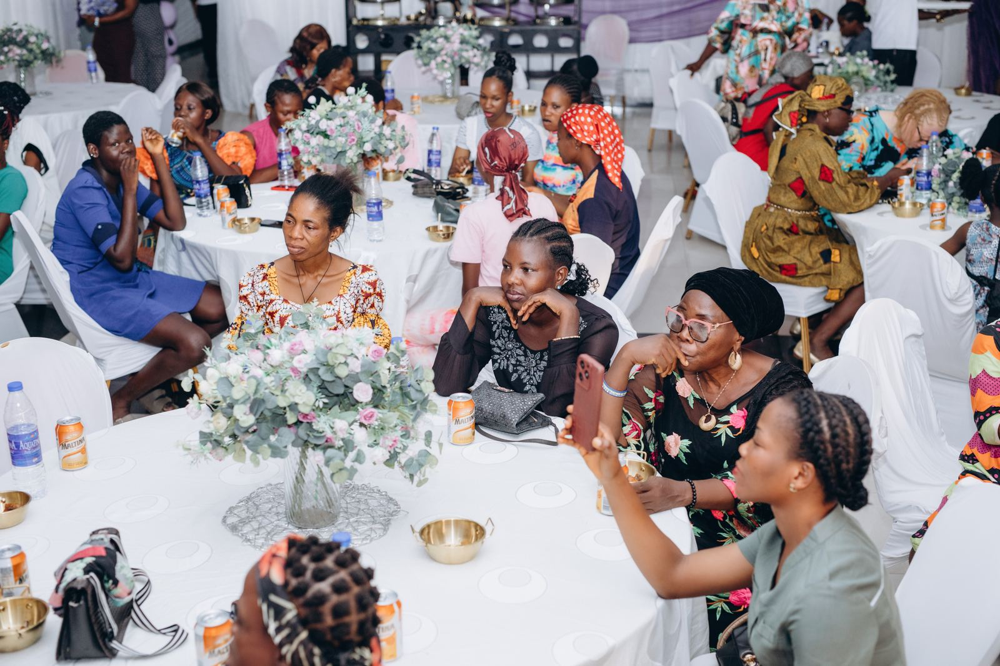
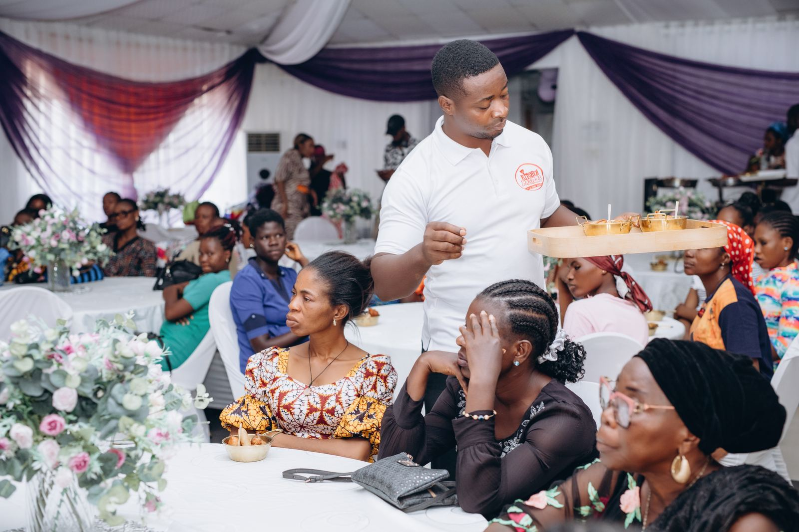

Hearts Agree Foundation works across four interconnected areas. Each is rooted in the same belief: that what we do because we remember is the most powerful thing we can offer.
We Remember You is our flagship community care program — and it's not going anywhere. But the Hearts Agree Task Force and the Entrepreneur Fund are just as core to what we're building: the ecosystem that turns one-off generosity across the diaspora into coordinated, lasting development. Read the full story →
We Remember You is our flagship initiative — an annual series of community care events held in Nigeria for survivors of domestic violence and vulnerable women and families.
We show up not as outsiders bearing aid, but as community bearing witness. At each event, participants receive groceries, medical screenings, clothing, and direct economic support. More than that — they are seen, honored, and celebrated as full human beings who deserve joy, not just relief.
The We Remember You model is built to grow. Community members who want to bring an event to their family's hometown can become City Champions — raising funds within their own networks while Hearts Agree Foundation provides the infrastructure, coordination, and resources to make it happen.


The Hearts Agree Entrepreneur Fund invests in diaspora members and Nigerian community leaders who want to build care programs and community initiatives back home.
We believe that the people closest to the problem are often the ones with the best ideas for solving it. The Entrepreneur Fund puts resources behind those ideas — providing grants, connections, and support to builders who want to lead something lasting in their communities.
This is not charity. This is investment in people who are already moving.
The Hearts Agree Task Force is a diaspora brain trust — a convened body of Nigerian professionals, entrepreneurs, investors, and community leaders living abroad who are committed to coordinated, sustained investment in Nigeria's future.
We are done with one-time giving. The Task Force moves toward long-term, strategic engagement — identifying priority development needs, coordinating diaspora expertise, and partnering with institutions and organizations on the ground in Nigeria.
If you are a diaspora Nigerian who is ready to do more than donate — this is where you belong.
Join the Task ForceHearts Agree Foundation engages diaspora expertise and resources in support of infrastructure and systemic development across Nigeria. This program connects diaspora professionals — engineers, architects, planners, public health experts — with Nigerian development projects and institutions that need their skills.
We believe the diaspora is one of Nigeria's greatest untapped resources. This program is how we put that belief into practice.
Partner With UsWhether you want to give, build, champion an event in your family's hometown, or lend your expertise to something larger — Hearts Agree Foundation is how the diaspora moves together.